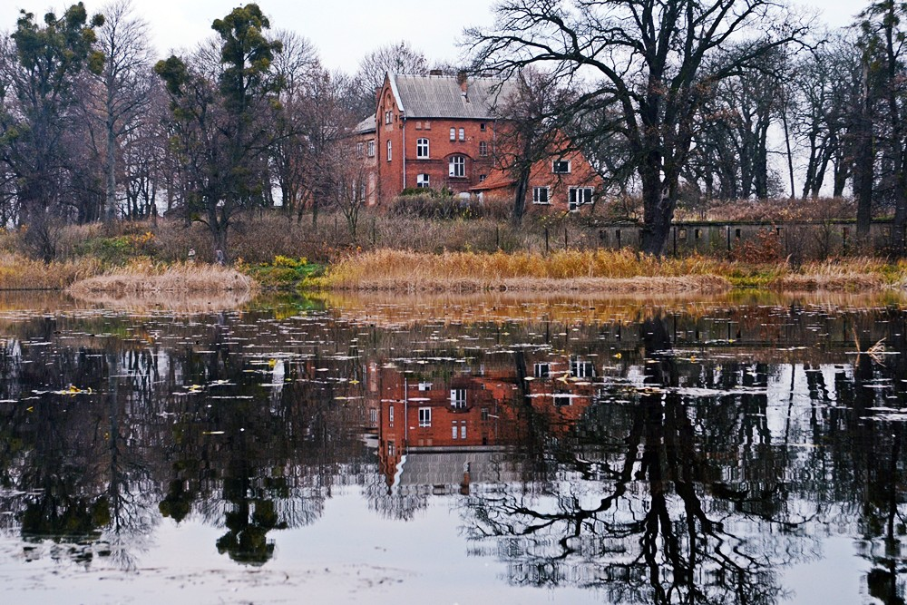
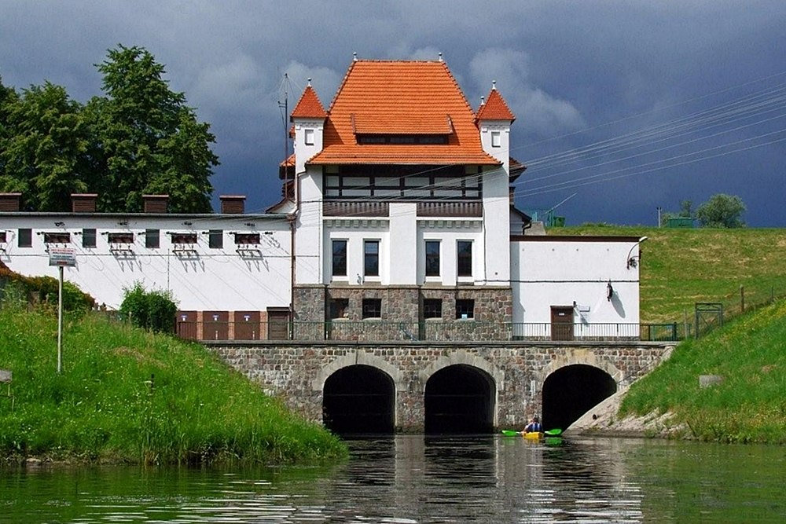
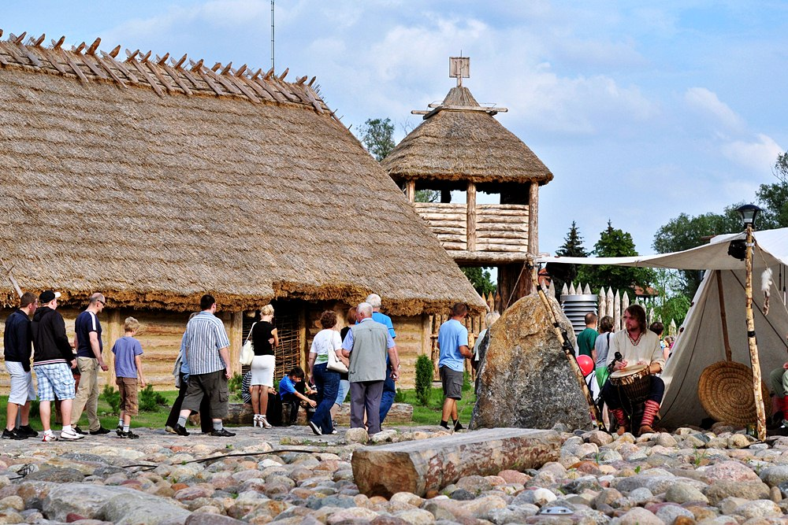

Dane o powiecie
| Siedziba | Pruszcz Gdański |
| Powierzchnia | 794 km² |
| Populacja | 110 666 |
Dane kontaktowe starostwa powiatowego
| Telefon | +48 58 773 12 12 |
| Adres | ul. Wojska Polskiego 16 83-000 Pruszcz Gdański |
| Strona | powiat-gdanski.pl |
Atrakcje turystyczne
Ruiny zamku w Sobowidzu
Zamek uległ zniszczeniom w XVII wieku w czasie potopu szwedzkiego i został rozebrany w XIX wieku. Na jego miejscu w XIX wieku wybudowano budynek z nieotynkowanej czerwonej cegły. Zachowały się częściowo gotyckie piwnice, fosy i mur skarpy. W 1996 ruiny zamku zostały wpisane do rejestru zabytków.
Źródło: turystyczny.powiat-gdanski.plElektrownia wodna w Straszynie
Elektrownia wodna powstała w celu zapobiegania wiosennym powodziom, podczas których wody Raduni zagrażały terenom na przedpolu fortów gdańskich. Została oddana do użytku 1910 roku i jest czynna do dzisiaj.
Źródło: turystyczny.powiat-gdanski.plFaktoria w Pruszczu Gdańskim
W Pruszczu Gdańskim warto odwiedzić Rekonstrukcję Faktorii Handlowej i Międzynarodowego Szlaku Bursztynowego z okresu wpływów rzymskich, która została otwarta w 2011 roku. Na podstawie badań archeologicznych odkryto, że przez Pruszcz Gdański przebiegał w I-V w n.e. szlak bursztynowy
Zródło: turystyczny.powiat-gdanski.pl